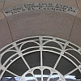
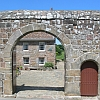
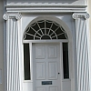
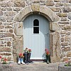
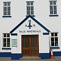

|  |
|  |
|  |
|  |
|  |
Nou peut ouvri l'us pouor entrer ou sorti ou laîssi pâsser un couothant d'air, par exempl'ye. Nou peut freunmer l'us pouor la seûth'té, la caleu, garder chein tch'est privé....
Y'a des difféthentes manniéthes dé porte ou d'us.
Eune maîson peut aver eune grand' porte ou un grand us - ch'est l'entrée prîncipale, la pus împortante (lé grand us est étout la pus grande des deux arches d'eune entrée; et lé p'tit us est la cheinne pouor les piêtons). La p'tite porte ou lé p'tit us est la porte dé driéthe.
Un us, en partitchulyi, peut aver deux parties: un battant à haut et un hai à bas. Sus eune fèrme, ch'est bein car nou peut ouvri l'battant sans laîssi pâsser d's annimaux dans la maîson. L's êtabl'yes ont souvent d'ches us.
Un porta est eune manniéthe dé porte. Chenna peut êt' eune porte dans eune muthâle dé gardîn - eune grande ou eune p'tite. Chenna peut êt' eune p'tite porte, dans eune grande porte, pouor les piêtons. Chenna peut êt' étout l'grand us d'eune églyise.
Un vitchet est eune p'tite porte.
Eune porte drissante ouvre dé bord. Y'a bein des portes automatiques dans des grandes boutiques ou des bâtisses publyis tchi sont des portes drissantes. Nou trouve étout des portes touônnantes ou portes en vitheveau.
Eune porte peut aver eune sétheûthe à seule fîn d'bârrer la porte atout eune clié.
Viyiz étout: